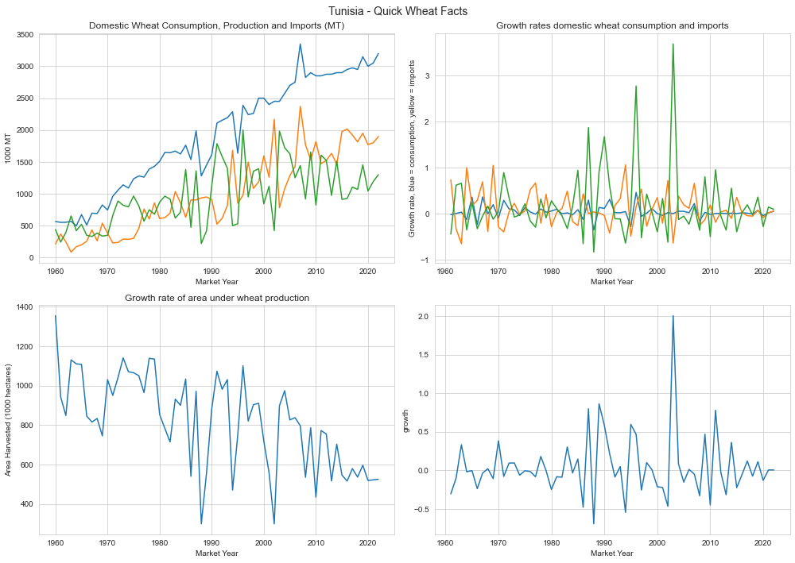
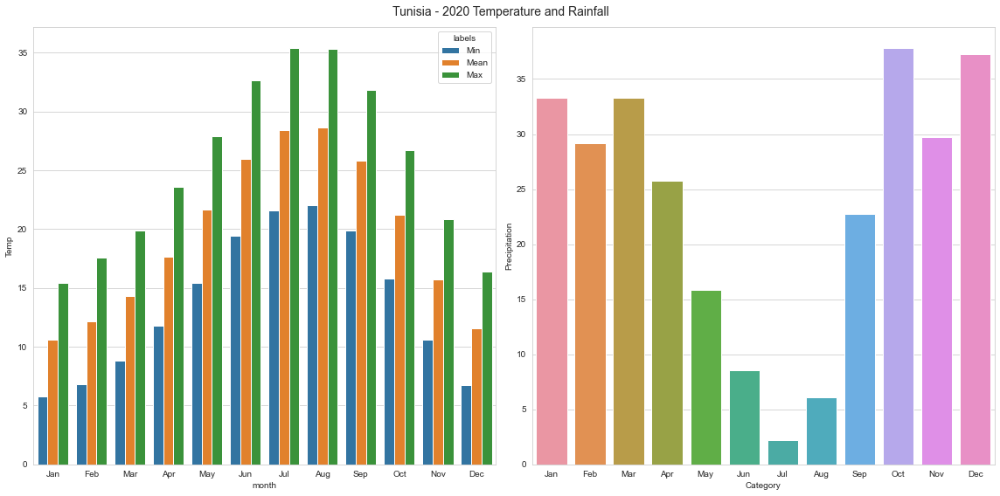

External Data
External Data#
import lxml
import os
import numpy as np
import matplotlib as mplt
import matplotlib.pyplot as plt
import datetime as dt
import random as random
import pandas as pd
import seaborn as sns
# get current working directory to load and save files
thedir = os.getcwd()
# use cwd to to get folders containing figures and data
datadir = os.path.abspath(os.path.join(os.path.dirname(thedir), '..', 'acrop/data'))
figdir = os.path.abspath(os.path.join(os.path.dirname(thedir), '..', 'acrop/figures'))
sns.set_style('whitegrid')
fig, axs = plt.subplots(2,2,figsize=(14,10))
# import data
consumption=pd.read_html('https://www.indexmundi.com/agriculture/?country=tn&commodity=wheat&graph=domestic-consumption')
production=pd.read_html('https://www.indexmundi.com/agriculture/?country=tn&commodity=wheat&graph=production')
area=pd.read_html('https://www.indexmundi.com/agriculture/?country=tn&commodity=wheat&graph=area-harvested')
imports=pd.read_html('https://www.indexmundi.com/agriculture/?country=tn&commodity=wheat&graph=imports')
def p2f(x):
try:
return float(x.strip('%'))/100
except:
return x
# consumption, production and import totals per year
data_ = consumption[4]
data = data_[["Domestic Consumption","Market Year"]]
sns.lineplot(data= data, y = "Domestic Consumption",x = "Market Year",ax = axs[0,0])
data__ = imports[4]
data = data__[["Imports","Market Year"]]
sns.lineplot(data= data, y = "Imports",x = "Market Year",ax = axs[0,0])
data___ = production[4]
data = data___[["Production","Market Year"]]
sns.lineplot(data= data, y = "Production",x = "Market Year",ax = axs[0,0])
axs[0,0].set_ylabel("1000 MT")
axs[0,0].set_title('Domestic Wheat Consumption, Production and Imports (MT)')
# growth rates consumption production and imports
data_ = consumption[4]
data = data_[["Growth Rate","Market Year"]]
data_['growth']=data_['Growth Rate'].apply(lambda x: p2f(x))
sns.lineplot(data= data_, y = "growth",x = "Market Year",ax = axs[0,1])
data__ = imports[4]
data__.dropna(axis = 0,how = 'any',inplace=True)
data__['growth']=data__['Growth Rate'].apply(lambda x: p2f(x))
sns.lineplot(data=data__, y = "growth",x = "Market Year",ax = axs[0,1])
data___.dropna(axis = 0,how = 'any',inplace=True)
data_['growth']=data___['Growth Rate'].apply(lambda x: p2f(x))
sns.lineplot(data= data_, y = "growth",x = "Market Year",ax = axs[0,1])
axs[0,1].set_ylabel("Growth rate, blue = consumption, yellow = imports")
axs[0,1].set_title('Growth rates domestic wheat consumption and imports')
# hectares total
data__ = area[4]
data = data__[["Area Harvested","Market Year"]]
sns.lineplot(data= data, y = "Area Harvested",x = "Market Year",ax = axs[1,0])
axs[1,0].set_ylabel("Area Harvested (1000 hectares)")
axs[1,0].set_title('Area under wheat production')
# growth rate hectares
data__.dropna(axis = 0,how = 'any',inplace=True)
data_['growth']=data__['Growth Rate'].apply(lambda x: p2f(x))
sns.lineplot(data= data_, y = "growth",x = "Market Year",ax = axs[1,1])
axs[1,0].set_title('Growth rate of area under wheat production')
fig = plt.gcf()
fig.suptitle("Tunisia - Quick Wheat Facts", fontsize=14)
plt.tight_layout()
plt.savefig(F'{figdir}/summary_wheat')
plt.show()

fig, axs = plt.subplots(1,2,figsize=(16,8))
monthly = pd.read_csv(F'{datadir}/monthly-climatology-of-min-temperature,-mean-temperature,-max-temperature-&-precipitation-1961-1990 br_ tunisia.csv')
mylist = []
for i in monthly.columns:
if (i != "Category") & (i != "Precipitation"):
label = i[:-12]
monthly["labels"] = label
monthly["Temp"] = monthly[i]
monthly["month"] = monthly.Category
mylist.append(monthly.iloc[:,5:])
if i == "Precipitation":
name = i[-13:]
merged = pd.concat([mylist[0],mylist[1],mylist[2]])
sns.barplot(x="month", y="Temp", hue='labels', data=merged,ax = axs[0])
data = monthly[["Category","Precipitation"]]
sns.barplot(data=data,x="Category",y="Precipitation",ax=axs[1])
fig = plt.gcf()
fig.suptitle("Tunisia - 2020 Temperature and Rainfall", fontsize=14)
plt.tight_layout()
plt.savefig(F"{figdir}/summary_temp_rain")
plt.show()

monthly = pd.read_csv('monthly-climatology-of-min-temperature,-mean-temperature,-max-temperature-&-precipitation-1961-1990 br_ tunisia.csv')
mylist = []
for i in monthly.columns:
if (i != "Category") & (i != "Precipitation"):
label = i[:-12]
monthly["labels"] = label
monthly["Temp"] = monthly[i]
monthly["month"] = monthly.Category
mylist.append(monthly.iloc[:,5:])
if i == "Precipitation":
name = i[-13:]
merged = pd.concat([mylist[0],mylist[1],mylist[2]])
---------------------------------------------------------------------------
FileNotFoundError Traceback (most recent call last)
Input In [9], in <cell line: 1>()
----> 1 monthly = pd.read_csv('monthly-climatology-of-min-temperature,-mean-temperature,-max-temperature-&-precipitation-1961-1990 br_ tunisia.csv')
2 mylist = []
3 for i in monthly.columns:
File ~/anaconda3/envs/klima-ag/lib/python3.10/site-packages/pandas/util/_decorators.py:311, in deprecate_nonkeyword_arguments.<locals>.decorate.<locals>.wrapper(*args, **kwargs)
305 if len(args) > num_allow_args:
306 warnings.warn(
307 msg.format(arguments=arguments),
308 FutureWarning,
309 stacklevel=stacklevel,
310 )
--> 311 return func(*args, **kwargs)
File ~/anaconda3/envs/klima-ag/lib/python3.10/site-packages/pandas/io/parsers/readers.py:680, in read_csv(filepath_or_buffer, sep, delimiter, header, names, index_col, usecols, squeeze, prefix, mangle_dupe_cols, dtype, engine, converters, true_values, false_values, skipinitialspace, skiprows, skipfooter, nrows, na_values, keep_default_na, na_filter, verbose, skip_blank_lines, parse_dates, infer_datetime_format, keep_date_col, date_parser, dayfirst, cache_dates, iterator, chunksize, compression, thousands, decimal, lineterminator, quotechar, quoting, doublequote, escapechar, comment, encoding, encoding_errors, dialect, error_bad_lines, warn_bad_lines, on_bad_lines, delim_whitespace, low_memory, memory_map, float_precision, storage_options)
665 kwds_defaults = _refine_defaults_read(
666 dialect,
667 delimiter,
(...)
676 defaults={"delimiter": ","},
677 )
678 kwds.update(kwds_defaults)
--> 680 return _read(filepath_or_buffer, kwds)
File ~/anaconda3/envs/klima-ag/lib/python3.10/site-packages/pandas/io/parsers/readers.py:575, in _read(filepath_or_buffer, kwds)
572 _validate_names(kwds.get("names", None))
574 # Create the parser.
--> 575 parser = TextFileReader(filepath_or_buffer, **kwds)
577 if chunksize or iterator:
578 return parser
File ~/anaconda3/envs/klima-ag/lib/python3.10/site-packages/pandas/io/parsers/readers.py:934, in TextFileReader.__init__(self, f, engine, **kwds)
931 self.options["has_index_names"] = kwds["has_index_names"]
933 self.handles: IOHandles | None = None
--> 934 self._engine = self._make_engine(f, self.engine)
File ~/anaconda3/envs/klima-ag/lib/python3.10/site-packages/pandas/io/parsers/readers.py:1218, in TextFileReader._make_engine(self, f, engine)
1214 mode = "rb"
1215 # error: No overload variant of "get_handle" matches argument types
1216 # "Union[str, PathLike[str], ReadCsvBuffer[bytes], ReadCsvBuffer[str]]"
1217 # , "str", "bool", "Any", "Any", "Any", "Any", "Any"
-> 1218 self.handles = get_handle( # type: ignore[call-overload]
1219 f,
1220 mode,
1221 encoding=self.options.get("encoding", None),
1222 compression=self.options.get("compression", None),
1223 memory_map=self.options.get("memory_map", False),
1224 is_text=is_text,
1225 errors=self.options.get("encoding_errors", "strict"),
1226 storage_options=self.options.get("storage_options", None),
1227 )
1228 assert self.handles is not None
1229 f = self.handles.handle
File ~/anaconda3/envs/klima-ag/lib/python3.10/site-packages/pandas/io/common.py:786, in get_handle(path_or_buf, mode, encoding, compression, memory_map, is_text, errors, storage_options)
781 elif isinstance(handle, str):
782 # Check whether the filename is to be opened in binary mode.
783 # Binary mode does not support 'encoding' and 'newline'.
784 if ioargs.encoding and "b" not in ioargs.mode:
785 # Encoding
--> 786 handle = open(
787 handle,
788 ioargs.mode,
789 encoding=ioargs.encoding,
790 errors=errors,
791 newline="",
792 )
793 else:
794 # Binary mode
795 handle = open(handle, ioargs.mode)
FileNotFoundError: [Errno 2] No such file or directory: 'monthly-climatology-of-min-temperature,-mean-temperature,-max-temperature-&-precipitation-1961-1990 br_ tunisia.csv'